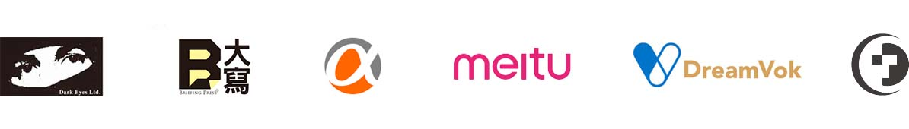

Placebo Studio
Founded in 2017, the name ‘placebo’ is a metaphor for the process of creating art as the phenomenon, in which the recipient perceives an improvement in condition due to personal expectations rather than the treatment itself. The core members Shandi YC Hsin and JJ Liou are from different background, aim to break the boundary of art forms by the interdisciplinary thinking and explores the possibility of innovation and creativity.
Shandi YC Hsin
Studied Media in Goldsmiths, University of London and received her master degree in 2012, worked as a specialist in Museum of Contemporary Art, Taipei from 2012 to 2015. Currently, she works as an independent artist and curator for film festivals and cultural events in Taipei, writing articles and reviews for cultural media. During July to September 2018, she was sponsored by National Taiwan Museum of Fine Art to participated the artist residency programme ‘Summer Sessions 2018’ in V2_Lab for the Unstable Media, developed the project ‘Tourist Factory: Rotterdam’. At the beginning of 2019, her project ‘The Kitchenette of Future Dust’ was selected by MediaLab - Prado to participated Interactivos’ 19: Eating Against Collapse, to develop the project with passionate collaborators from UK, India, Spain and Columbia.
JJ Liou
Majored in industrial design in university; in graphic design in M.A.. During 2012 to 2013, he got one-year full scholarship sponsored by Taiwanese government for studying Graphic Design in Art Center College of Design. For the past ten years, he had received nominations and awards by many international awards, including Red Dot Communication Design Award, Adobe Design Achievement Award, and Incheon International Design Award. Also, his works have been featured in several major exhibitions, including Taipei World Design EXPO and Taiwan Designers’ Week.
Feel free to contact us!
hycgiggle@gmail.com
Our Clients
Dark Eyes Ltd., Briefing Press, LivingLetters Press, QDY Magazine, ALPHA Camp, Meitu, DreamVok, Dechnology, Taiwan Design Center,
National Taiwan University of Science and Technology, Shih Chien University, ROJO, Gentleyeh Design, Maison Kwaifah, T.Rex Music, Blue Tears Band, Director Feng-i Fiona Roan,
Director Clifford Miu, Director Blue Chen, Director Benjamin Yang, DJ Marc, Eye Catching Circus, etc.

Artist-in-residence
2019 Feb - Mar MediaLab Prado, Madrid, Spain
2018 Jul - Sep V2_ Institute for the Unstable Media, Rotterdam, The Netherland

Grants
2018 Art X Science Oversea Residency Grant, National Taiwan Museum of Fine Art
2012 Scholarship Program for Overseas Study in Arts & Design, Ministry of Education, Taiwan
Awards
2015 Lexus Design Award, Finalist of Panel Winner
2013 ADAA, Semi-Finalist
2011 Red dot Communication Design Award, Winner
2011 Great Design Award, Winner
2011 RADICALLY PORSCHE a one month scholarship contest, Finalist
2010 Icheon International Design Award, 2 Works in Finalist
2010 Taiwan International Student Design Competition, Finalist
2010 Product Design Section in Yodex Competition, Special Award
2009 Taipei International Design Award, Winner

Exhibition
2019
Interactivos?’ 19, MediaLab Prado ＠ Madrid, Spain
2018
Summer Sessions, V2_ Institute for the Unstable Media @ Rotterdam, The Netherland
2014
Taipeing, Backpacker Cafe @ Taipei, Taiwan
2014
iiiii Design Exhibition, Four Four South Village, Building D @ Taipei, Taiwan
2013
Student Gallery, Art Center College of Design @ California, United States
2012
Taipei World Design EXPO, Nangang Exhibition Hall ＠ Taipei, Taiwan
2011
Rising Star Exhibition in Taiwan Designer’s Week, Huashan 1914 Creative Park ＠ Taipei, Taiwan